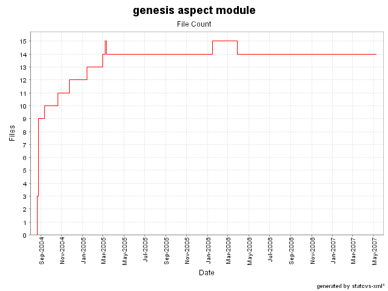
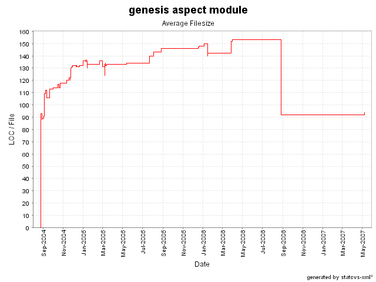

Last published: 08 April 2008
|
Doc for 3.1-RC2
genesis
|
genesis-aspect
|
genesis-client
|
genesis-server
|
genesis-shared
|
genesis-xdoclet
Projects
genesis
Project Documentation
About
Project Info
Project Reports
Development Process
java.net
genesis.dev.java.net
Legend
External Link
Opens in a new window
File Statistics
Back to Index Page
File Count

Average Filesize

Commits (per file)
File
Revisions
src/net/java/dev/genesis/aspect/FormMetadataFactoryAspect.java
35
src/net/java/dev/genesis/aspect/CriteriaCommandExecutionAspect.java
18
src/annotation.properties
14
src/net/java/dev/genesis/aspect/LocalCommandExecutionAspect.java
12
src/net/java/dev/genesis/aspect/EJBCommandExecutionAspect.java
11
src/net/java/dev/genesis/aspect/TimeoutAspect.java
10
src/net/java/dev/genesis/aspect/CommandInvocationAspect.java
10
src/net/java/dev/genesis/aspect/FormControllerFactoryAspect.java
9
src/net/java/dev/genesis/aspect/ThinletMetadataFactoryAspect.java
8
src/net/java/dev/genesis/aspect/ViewMetadataFactoryAspect.java
7
src/net/java/dev/genesis/aspect/WaitCursorAspect.java
6
src/net/java/dev/genesis/aspect/LocalEJBCommandExecutionAspect.java
6
src/net/java/dev/genesis/aspect/HibernateTransactionalInjector.java
5
src/net/java/dev/genesis/aspect/ParameterizedMixinFactory.java
4
src/net/java/dev/genesis/aspect/CommandResolver.java
3
src/net/java/dev/genesis/aspect/WaitCursorAdvice.java
2
src/net/java/dev/genesis/aspect/TimeoutAdvice.java
2
src/net/java/dev/genesis/aspect/ScriptableObjectAspect.java
2
src/net/java/dev/genesis/aspect/CommandExecutionAdvice.java
2
Lines of Code (per file)
File
Lines of Code
src/net/java/dev/genesis/aspect/TimeoutAspect.java
285
src/net/java/dev/genesis/aspect/CriteriaCommandExecutionAspect.java
161
src/net/java/dev/genesis/aspect/EJBCommandExecutionAspect.java
152
src/net/java/dev/genesis/aspect/HibernateTransactionalInjector.java
131
src/net/java/dev/genesis/aspect/LocalEJBCommandExecutionAspect.java
118
src/net/java/dev/genesis/aspect/LocalCommandExecutionAspect.java
107
src/net/java/dev/genesis/aspect/CommandInvocationAspect.java
75
src/net/java/dev/genesis/aspect/FormMetadataFactoryAspect.java
55
src/net/java/dev/genesis/aspect/WaitCursorAspect.java
48
src/net/java/dev/genesis/aspect/ThinletMetadataFactoryAspect.java
45
src/net/java/dev/genesis/aspect/FormControllerFactoryAspect.java
43
src/net/java/dev/genesis/aspect/ViewMetadataFactoryAspect.java
38
src/annotation.properties
33
src/net/java/dev/genesis/aspect/CommandResolver.java
26
src/net/java/dev/genesis/aspect/WaitCursorAdvice.java
0
src/net/java/dev/genesis/aspect/TimeoutAdvice.java
0
src/net/java/dev/genesis/aspect/ScriptableObjectAspect.java
0
src/net/java/dev/genesis/aspect/ParameterizedMixinFactory.java
0
src/net/java/dev/genesis/aspect/CommandExecutionAdvice.java
0
Authors (per file)
File
Authors
src/net/java/dev/genesis/aspect/CriteriaCommandExecutionAspect.java
4
src/net/java/dev/genesis/aspect/WaitCursorAspect.java
3
src/net/java/dev/genesis/aspect/TimeoutAspect.java
3
src/net/java/dev/genesis/aspect/LocalCommandExecutionAspect.java
3
src/net/java/dev/genesis/aspect/FormMetadataFactoryAspect.java
3
src/net/java/dev/genesis/aspect/EJBCommandExecutionAspect.java
3
src/net/java/dev/genesis/aspect/CommandResolver.java
3
src/net/java/dev/genesis/aspect/CommandInvocationAspect.java
3
src/annotation.properties
3
src/net/java/dev/genesis/aspect/ViewMetadataFactoryAspect.java
2
src/net/java/dev/genesis/aspect/ThinletMetadataFactoryAspect.java
2
src/net/java/dev/genesis/aspect/LocalEJBCommandExecutionAspect.java
2
src/net/java/dev/genesis/aspect/HibernateTransactionalInjector.java
2
src/net/java/dev/genesis/aspect/FormControllerFactoryAspect.java
2